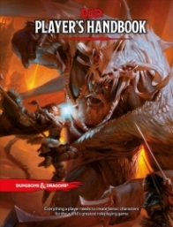
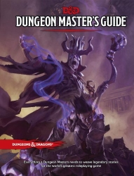
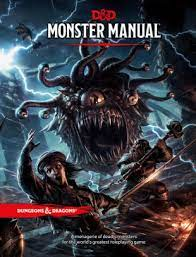
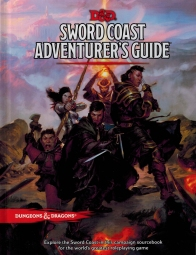
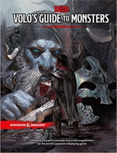
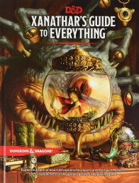
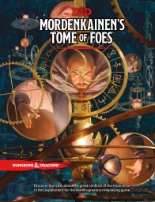
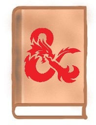

CORE
|
 |
Player's handbookКнига Игрока, PH (2014)«Книга игрока» — ключевое руководство для любого игрока в Dungeons & Dragons. Книга содержит правила по созданию и развитию персонажей, предыстории и навыки, исследование и бои, экипировку, заклинания и многое, многое другое. Использован перевод: студия «PHantom» |
|
 |
Dungeon master's guideРуководство Мастера, DMG (2014)«Руководство Мастера» содержит материалы, способные дать вдохновение и наставление, зажечь искру вашего воображения и создать миры, полные приключений для ваших игроков. Внутри вы найдете инструменты для создания миров, советы и хитрости для построения запоминающихся подземелий и приключений, опциональные правила игры, сотни классических магических D&D предметов и многое другое! Использован перевод: студия «PHantom» |
 |
Monster manualБестиарий, MM (2014)В «Бестиарии собраны орды классических и новых существ, включая драконов, великанов, пожирателей разума, бехолдеров и прочих. Использован перевод: студия «PHantom» и dungeons_ru |
Source books
 |
Sword Coast Adventurer's GuideРуководство приключенца по Побережью Мечей, SCAG (2015)Первое «расширение» библиотеки пятой редакции включает в себя описание «центральной части» Забытых Королевств, населяющих их рас и их религий. Классы получили описание «мирских» организаций, из которых могут выходить приключенцы — такие, как ордена паладинов или монахов — а предыстории пополнились двенадцатью новыми, включая «представителя фракции», дающего возможность членства в одной из фракций Побережья. Самые крупные из фракций: Орден Перчатки, Изумрудный Анклав, Арфисты, Жентарим — конечно, тоже были описаны. Использован перевод: dungeons_ru(stivie, korfax, AmethystBard, Kensy, Ankheg, Divuz, Kestel, Tenkai, greylex) |
 |
Volo's guide to monsters (legacy)Справочник Воло по Монстрам, VGM (2016)Как и обещает название, в этой книге Волотамп Геддарм, или попросту Воло, собрал описания более сотни существ и целых культур, таких, как юань-ти, кобольды, орки, гиганты и другие. Более того, некоторые расы и цивилизации, как выяснилось, тоже способны рождать приключенцев, несмотря на то, что эти существа могли считаться безразличными к делам Забытых Королевств — или даже откровенно к ним враждебными; Справочник добавляет играбельные расы аасимаров, фирболгов, голиафов, кенку, людоящеров, табакси, тритонов, багбиров, гоблинов, хобгоблинов, кобольдов, орков и чистокровных юань-ти. Использован перевод: dungeons_ru(Kitar, blackhole_next, stivie, Xattttta, Kestel, vanillaDM, FtZ, stallion971, palant, r0ot35) |
 |
Xanathar's Guide to EverythingРуководство Занатара обо всём, XGE (2017)«Руководство Занатара обо всём» по большому счёту можно считать продолжением «Книги игрока». Значительная часть «Руководства» отдана развитию возможностей персонажей: в книге добавлено более 30 новых архетипов, а каждый класс обзавелся более проработанной историей становления приключенца. Вторая половина книги посвящена проработке мира в руках Мастера: прописаны многие механические моменты, такие как падение, сон, завязывание узлов; получили значительное развитие ремесленные инструменты, ловушки, деятельность простоя. Использован перевод: dungeons_ru(DUNGEONS_GUEST, r0ot35, Max_well, korfax, Xattttta, stivie, Kitar, palant, Savlon, poletaew, FtZ, PublicWebTerror, LeoKot, Cezareon, Nexile, schtormung) |
 |
Mordenkainen's Tome of Foes (legacy)Том Морденкайнена о Врагах, MTF (2018)Эта книга фокусируется на описании и проработке некоторых находящихся в состоянии перманентной войны рас: тифлингов, эльфов, дварфов и дуэргаров, гитов, а также и не понимающих, зачем войны вообще вести, полуросликов и гномов. В Томе также добавлено более сотни существ, характерных для описанных местностей. Использован перевод: dungeons_ru, dnd.su (значительная часть текста была переведена машинным способом, по возможности эти тексты заменяются на литературные) |
 |
Guildmasters' guide to RavnicaПутеводитель Мастера Гильдии по Равнике, GGR (2018)Книга рассказывает о Равнике, мире вселенной Magic: The Gathering, который целиком покрыт городом с западно-славянской эстетикой. Равника — это место, в котором все разумные существа так или иначе делятся на 10 гильдий, кухня и отношения которых прописаны в мельчайших подробностях. Здесь вы можете найти гильдейские предыстории, продвижение по карьерной лестнице, а также новые расы и архетипы! А в проведении приключения в этом мире бескрайних урбанистических пейзажей вам помогут новые чудовища и магические предметы! Использован перевод: dnd.su |
Acquisition IncorporatedAI (2019)Использован перевод: dnd.su |
Eberron: Rising from the Last WarRLW (2019)Эта книга содержит в себе описание Эберрона, манапанкового мира, пережившего великую войну. Вникайте в политические игры домов, прокатитесь на воздушном корабле и самом настоящем поезде! В книжке вы увидите новые сеттинговые расы, а также подрасы, представляющие из себя драконьи метки, некоторые из которых могут проявиться на представителях разных рас. В дополнение к этому ваш игровой опыт разбавит парочка интересных черт, новая предыстория, магические предметы и изобретатель — совершенно новый класс. Использован перевод: dnd.su, Dungeons & Dragons: Eberron. Переводы, 3d печать |
Explorer's Guide to WildemountПутеводитель Исследователя по Дикогорью, EGW (2020)«Путеводитель по Дикогорью» — это книга, написанная Мэттом Мёрсером, мастером самого популярного D&D-шоу — «Critical Role». Дикогорье является лишь одним из материков Экзандрии — мира, в котором и происходит действие шоу. Здесь вас ожидают описание материка и его истории, приключения, сеттинговые подрасы и предыстории, архетипы волшебника и воина, чудовища и магические предметы, в том числе и Отголоски Дивергенции — магические предметы с новой механикой постепенно увеличивающейся силы. Использован перевод: dnd.su |
Mythic Odysseys of TherosМифическая Одиссея Тероса, MOT (06 2020)Книга повествует о Теросе — мире Magic: The Gathering, вдохновлённом греческой мифологией. Если вы играете в одно из приключений Тероса, то примеряете на себя личину мифического героя и божественного поборника. В книге вы можете найти подробное описание мира и в частности богов, которые активно на него влияют; новые архетипы для барда и паладина; механику благоволения, показывающую расположение богов к своим поборникам; новые героические дары, а также вдохновлённых греческими мифами чудовищ и магические предметы.. Использован перевод: dnd.su, Миры Доминии — MtG Storyline. |
Tasha's Cauldron of EverythingКотёл Таши со всякой всячиной, TCE (11 2020)Эта книга представляет из себя сборник опций для персонажей и инструментов для Мастера, под которыми оставляет забавные комментарии сама Таша — могущественная ведьма. Здесь находятся: изменённый с выхода в «Eberron: Rising from the Last War» класс изобретателя, архетипы для всех классов, новые классовые умения, заклинания, магические предметы, черты, классы напарников и множество подсказок и советов для Мастера. Использован перевод: dungeons_ru (Maksim Kudryavtsev, Aleksey Kuzkokov, Fraxinus Acer, Denis Bezykornov, Ирина Юдина, Maksim Smolyaninov, Aleksandr Akatev, Elena Konovalova, Dragon of Shades, Tamnar Iidar, Bubba Sawyer, Danil Shakhov, Igor Dudlez, Aleksey Balashov, Ivan Kusakin, Andrey Ruban, J Porom, Andrey Bannikov, Kseniya Shaborkina) |
Van Richten's Guide to RavenloftПутеводитель Ван Рихтена по Равенлофту, VRGR (2021)Эта книга, написаная доктором Рудольфом Ван Рихтеном, является руководством по выживанию в доменах ужаса — демипланах, кишащих готическими тварями и отвратными скотобестиями. Его рукой были писаны описания всех известных доменов и возможных похождений в данных мирах; был составлен бестиарий тварей, которые могут встретиться на пути заблудших душ; было рассказано о необычных предысториях, происхождениях и архетипичных способностях жителей доменов; были описаны разные степени ужаса и дары от темнейших неописуемых сущностей, которых лучше бы сторониться. Использован перевод: dungeons_ru (brahidaktilia, Ilya Bolyasov, Aleksey Balashov, Featona, poletaew, Aleksey Kuzkokov, Ilya Zelenkov) |
Fizban's Treasury of DragonsСокровищница Драконов Физбана, FTD (10 2021)Драконы — это не просто монстры, являющиеся банкой с икспой для игроков. Драконы — это благородные существа, чуть ли ни икона жанра фэнтэзи. В этой книге вы сможете найти огромное количество информации об этих крылатых созданиях: их характеры, мотивы, размножение, рост, жизненный цикл, связанные с ними религии, их отношения и многое другое. Кроме того, здесь содержится много связанных с драконами опций для игроков: архетипы монаха и следопыта, новые черты и различные варианты расы драконорождённых. Использован перевод: Helpmate |
Minsc and Boo's Journal of VillainyЖурнал Злодеев Минска и Бу (11 2021)"Злой двойник" Журнала Героев от легендарного Минска и ещё более легендарного миниатюрного гигантского космического хомяка Бу. Использован перевод: информация уточняется |
Strixhaven: A Curriculum of ChaosSCC (2021)Учились ли вы когда-нибудь в университете? Если да, то наверняка не захотите возвращаться во времена незакрытых сессий, долгов по учёбе, «халявы приди», курсачам, дипломам и «мам, мне ко второй». Но что, если всё это приправить щепоткой чародейства и волшебства? Тогда получится то, что вы сможете найти в этой книге! Добро пожаловать в Использован перевод: Sigrlin |
Mordenkainen Presents: Monsters of the MultiverseМорденкайнен представляет: чудовища Мультивселенной, MPMM (2022)D&D — это не только троекнижие. С каждой новой выходящей книгой наша любимая игра изменяется. Некоторые аспекты геймдизайна претерпевают изменения, что и отражают «Чудовища мультивселенной» — книга, вобравшая в себя уже существующие расы персонажей и блоки статистики существ, которые были обновлены с учётом новых веяний геймдизайна. Кроме того, это отразилось и на «Лиге приключенцев», ведь для лиги весь контент из «Чудовищ мультивселенной» является актуальным. Тот контент, что это книга заменяет, считается legacy контентом — неактуальным, но тем, которым всё ещё можно пользоваться в своих домашних играх. Использован перевод: информация уточняется |
Campaigns
Lost Mine of PhandelverЗаброшенные рудники Фанделвера, LMOP (2014)Часть "Стартового набора" Использован перевод: информация уточняется |
Hoard of the Dragon QueenКлад Королевы Драконов, HDQ (12 2014)Сезон 1 Использован перевод: информация уточняется |
The Rise of TiamatROT (2014)Сезон 1 Использован перевод: информация уточняется |
Out of the AbyssИз бездны, OTA (2015)Использован перевод: информация уточняется |
Princes of the ApocalypseПринцы Апокалипсиса, PTA (2015)Сезон 2 Использован перевод: информация уточняется |
Curse of StrahdПроклятие Страда, COS (2016)Сезон 4 Если вы хотите заставить ваших персонажей страдать и испытывать самый ужасный страх — страх за свою жизнь, то эта кампания для вас. Вы будете противостоять Страду фон Заровичу — древнему вампиру, что будет играться с вами как с хомячками, которых он просто не хочет загонять в клетку. Проверьте, смогут ли ваши персонажи покинуть этот мир готического фэнтэзи, или же подохнут на полпути. Использован перевод: dungeons_ru (korfax, DUNGEONS_GUEST, Lola_Step, Kitar, Depressa, stallion971, Kestel, duntik, Basilisk, r0ot35, stivie, Gotham_Rat, Gumeg) |
Storm King's ThunderSKT (2016)Сезон 5 Использован перевод: информация уточняется |
Tomb of AnnihilationГробница Аннигиляции, TOA (2017)Использован перевод: информация уточняется |
Tales from the Yawning PortalБайки из "Зияющего Портала", TYP (2017)Сезон 6, адаптация для D&D 5e семи подземелий из лучших в истории D&D. Использован перевод: информация уточняется |
Waterdeep: Dragon HeistГлубоководье: Драконий куш, WDH (2018)Использован перевод: информация уточняется |
Waterdeep: Dungeon of the Mad MageГлубоководье: Подземелье Безумного Мага, WDMM (2018)Использован перевод: информация уточняется |
Baldur's Gate: Descent Into AvernusВрата Балдура: Нисхождение в Авернус, BGDA (2019)Сезон 9 Использован перевод: информация уточняется |
Ghosts of SaltmarshПризраки Солтмарша, GOS (12 2019)Использован перевод: информация уточняется |
Icewind Dale: Rime of the FrostmaidenIDRF (2020)Сезон 10 Использован перевод: информация уточняется |
Candlekeep MysteriesТайны Кендлкипа, CM (2021)Использован перевод: информация уточняется |
The Wild Beyond The Witchlight: A Feywild AdventureWBW (2021)Сезон 11 Использован перевод: информация уточняется |
SPELLJAMMER: ADVENTURES IN SPACESAS (2022)Использован перевод: информация уточняется |
Adventures & supplements
Monstrous Compendium Volume One: Spelljammer CreaturesИспользован перевод: информация уточняется |
The Tortle PackageTP (12 2017)Использован перевод: информация уточняется |
Locathah RisingLR (2019)Использован перевод: информация уточняется |
Hunt for the ThessalhydraИспользован перевод: информация уточняется |
Unearthed ArcanaИспользован перевод: информация уточняется |
Homebrew
Essentials Kit: Divine ContentionИспользован перевод: информация уточняется |
The Lost Dungeon of Rickedness: Big Rick EnergyИспользован перевод: информация уточняется |
Essentials Kit: Sleeping Dragon's WakeИспользован перевод: информация уточняется |
Technomancer's TextbookИспользован перевод: информация уточняется |
Adventure With MukИспользован перевод: информация уточняется |
One Grung AboveИспользован перевод: информация уточняется |
Plane Shift: ZendikarИспользован перевод: информация уточняется |
Plane Shift: InnistradИспользован перевод: информация уточняется |
Plane Shift: KaladeshИспользован перевод: информация уточняется |
Plane Shift: AmonkhetИспользован перевод: информация уточняется |
Plane Shift: IxalanИспользован перевод: информация уточняется |
Plane Shift: DominariaИспользован перевод: информация уточняется |
Matt Mercer / Critical RoleИспользован перевод: информация уточняется |
Exploring EberronИспользован перевод: информация уточняется |
Book of Lost SpellsИспользован перевод: информация уточняется |
Lost Laboratory of KwalishИспользован перевод: информация уточняется |
Midgard Heroes HandbookИспользован перевод: информация уточняется |
Monster Manual ExpandedИспользован перевод: информация уточняется |
Essentails kit: Dragon of Icespire peakИспользован перевод: информация уточняется |
Critical Role: Call of the NetherdeepИспользован перевод: информация уточняется |
Sprouting ChaosHB: SC (2015)Использован перевод: информация уточняется |
Beasts of the Jungle RotМодуль Adventure League для Tomb of Anihilation, в котором собраны разнообразные динозавры, расширенные правила по случайным столкновениям, раса динозавров, и правила по охоте на динозавров ради шкуры и яиц.Использован перевод: dungeons_ru |
Комментарии